2점 투시(2-point perspective)가 무엇인가 — 물체를 모서리 쪽에서 비스듬히 바라볼 때 쓰는 그리기 방법이다.
수평선(horizon line) 위에 소실점(vanishing point)을 두 개 찍고, 물체의 가로 선들을 각각 그 두 점으로 모아 그린다.
1점 투시(1-point perspective)는 정면에서 볼 때 점 하나만 쓰지만, 2점 투시는 건물이나 상자의 모서리가 나를 향해 튀어나온 것처럼 보이게 만든다.
기본 구조 — 먼저 종이에 눈높이인 horizon line(수평선)을 가로로 긋고, 그 선의 왼쪽 끝과 오른쪽 끝 가까이에 소실점 두 개(VP1, VP2)를 찍는다.
다음에 물체에서 가장 가까운 모서리(corner edge)를 세로선 하나로 그린다. 이 세로선이 상자의 앞 모서리가 된다.
그 세로선의 위 끝과 아래 끝에서 왼쪽 소실점으로 선을 긋고, 같은 방식으로 오른쪽 소실점으로도 선을 긋는다. 이 선들이 투시선(orthogonal lines / guide lines)이다.
상자 완성하기 — 투시선 사이에 세로선을 두 개 더 그어 상자의 왼쪽 면과 오른쪽 면의 끝을 정한다.
세로선은 언제나 수직(vertical)을 유지한다 — 2점 투시에서는 세로선이 기울지 않는다.
뒤쪽 모서리는 각 끝점에서 반대쪽 소실점으로 다시 선을 그어 만나는 자리에 생긴다.
마지막에 안내선은 지우고(erase guide lines), 실제로 보이는 모서리만 진하게 남기면 입체 상자가 된다.
눈높이(eye level) — 수평선이 물체보다 위에 있으면 물체를 내려다보는 모습(윗면이 보인다), 아래에 있으면 올려다보는 모습(밑면이 보인다)이 된다.
물체가 수평선에 걸쳐 있으면 윗면도 밑면도 보이지 않는다.
같은 상자라도 수평선 위치만 바꾸면 완전히 다른 시점의 그림이 나온다.
깊이 표현(depth) — 소실점에 가까워질수록 면이 좁아지고 선 사이 간격이 촘촘해진다. 이것이 멀어질수록 작아 보이는 원근(perspective) 효과다.
이 방법을 반복하면 건물, 방, 거리 풍경처럼 복잡한 장면도 같은 원리로 그릴 수 있다.
✍️ 꼭 알아야 하는 것
- 수평선(horizon line) 위에 소실점(vanishing point) 두 개를 찍고, 가장 가까운 모서리 세로선에서 양쪽 소실점으로 선을 긋는 순서를 알아야 한다.
- 2점 투시에서 세로선(vertical lines)은 항상 수직이며, 기울어지는 것은 소실점으로 향하는 투시선뿐이라는 점을 알아야 한다.
- 수평선이 물체보다 위에 있으면 윗면이 보이고 아래에 있으면 밑면이 보인다는 눈높이(eye level)의 효과를 알아야 한다.
틴 케이스 제품 만들기Product in a Tin1~2학기
재활용 깡통(tin)을 골라 그 안에 들어갈 제품을 직접 디자인하고, 깡통 겉면도 새로 브랜딩(rebrand)하는 프로젝트다. 이전 학생 작품으로 깡통 속 선풍기, 펠트 놀이음식, 공기놀이 세트, 스킨·헤어 제품 같은 예가 나온다. 학교와 집에서 실제로 만들 수 있는 현실적인 것이어야 한다.
첫 단계는 마인드맵(mind map)이다. 7가지 질문에 답을 채운다 — 어떤 종류의 깡통을 쓸지, 안에 무엇이 들어갈지, 누가 쓸지, 어떤 문제를 해결하는지, 재미있는(novelty) 아이디어는 무엇인지, 내 관심사·취미·정체성을 보여주는 제품은 무엇인지, 이 깡통이 겉보기 이상이 되려면 어떻게 해야 하는지. 글과 이미지를 섞고 보기 좋게(aesthetic) 꾸며서 Google Classroom의 DT 포트폴리오에 올린다.
두 번째 단계는 상황(Situation)과 디자인 과제(Design Brief) 쓰기다. 상황은 배경 이야기로 왜 이 디자인이 필요한지, 누가 쓸지, 어떤 문제나 기회가 있는지를 설명한다. 디자인 과제는 짧은 의도 진술문으로 무엇을 디자인할지, 누구를 위한 것인지, 제품의 목적이 무엇인지를 밝힌다. "깡통을 멋지게 만들고 싶다" 같은 문장은 문제도 사용자도 없어서 나쁜 예로 제시된다.
세 번째는 고객 프로필(customer profile)이다. 모든 제품은 특정한 누군가를 위해 만들어지고, 디자인하기 전에 그 사람의 필요를 알아야 좋은 제품이 나온다는 것이 핵심이다. 나이·성별·사는 곳·직업처럼 공통점으로 사람들을 묶어 설명하는 것을 인구통계(demographic)라고 한다. 예시로 나온 인물은 24세 여성, 다만사라 음악가게 직원, 혼자 살고 고양이 두 마리, 환경친화를 중시하고 어둡고 세련된 색의 휴대하기 편한 물건을 원한다.
✍️ 꼭 알아야 하는 것
- 상황(Situation)과 디자인 과제(Design Brief)의 차이 — 상황은 '왜 필요한가'라는 배경, 디자인 과제는 '무엇을 누구를 위해 만드는가'라는 의도 진술이다.
- 자기 점검표 5가지 — 문제나 필요를 분명히 설명했는지, 사용자·고객이 누구인지 밝혔는지, 깡통 안에 무슨 제품이 들어가는지 말했는지, 깡통을 어떻게 리브랜딩할지 설명했는지, 학교와 집에서 실제로 만들 수 있는지.
📚 이 자료의 핵심 단어
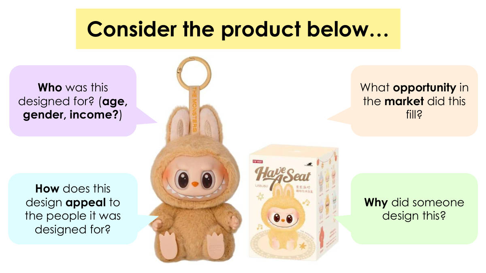
이 디자인은 시장에서 어떤 기회를 채웠나?
이 디자인은 대상이 된 사람들에게 어떻게 매력적으로 다가가는가?
누군가는 왜 이것을 디자인했나?
아래 제품을 살펴보자…
제품을 분석할 때 던지는 네 가지 질문이다: 대상 사용자, 시장 기회, 매력 요소, 디자인 이유.
대상 사용자는 나이·성별·소득으로 나누어 생각한다.

깡통 속 제품(Product in a Tin)
생각하고, 짝과 나누고, 함께 이야기하기
좋은 디자인이란 무엇인가? (기능, 창의성, 사용자의 필요, 매력)
이 단원의 이름은 'Product in a Tin'(깡통 속 제품)이고, 9학년 디자인과 기술 1학기 수업이다.
좋은 디자인을 판단하는 기준으로 기능, 창의성, 사용자의 필요, 매력 네 가지가 제시된다.

깡통 속 선풍기
포장과 브랜딩 예시
깡통 속 펠트 놀이 음식
깡통 속 손으로 만든 공기놀이
깡통 속 피부·모발 관리 제품
깡통 안에 넣을 수 있는 제품의 종류가 선풍기, 펠트 음식, 공기놀이, 피부·모발 관리 제품처럼 다양하다
제품 자체뿐 아니라 포장과 브랜딩도 함께 만든다
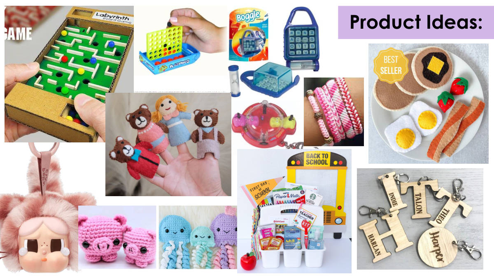
깡통에 담을 제품 아이디어를 적는 칸이다

이 쪽은 제목만 있고 내용은 비어 있으며, 틴 아이디어를 종류별로 나누어 적는 자리다
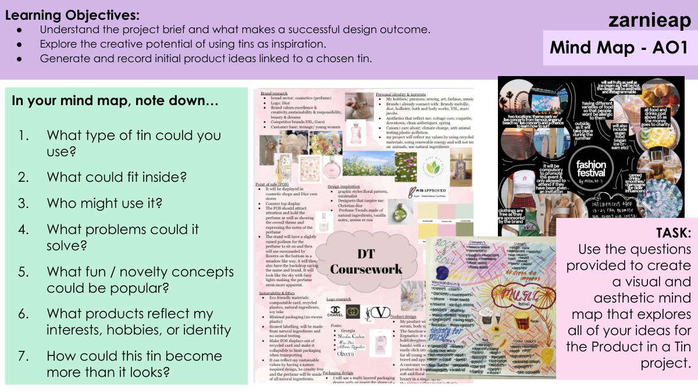
• 과제 개요를 이해하고, 무엇이 성공적인 디자인 결과물을 만드는지 안다.
• 깡통(tin)을 영감으로 쓰는 창의적 가능성을 탐색한다.
• 고른 깡통과 연결된 초기 제품 아이디어를 만들고 기록한다.
마인드맵 - AO1
과제: 주어진 질문들을 이용해 'Product in a Tin' 프로젝트에 대한 나의 모든 아이디어를 펼치는, 보기 좋고 미적인 마인드맵을 만든다.
마인드맵에 다음을 적는다…
1. 어떤 종류의 깡통을 쓸 수 있을까?
2. 안에 무엇이 들어갈 수 있을까?
3. 누가 그것을 쓸까?
4. 어떤 문제를 해결할 수 있을까?
5. 어떤 재미있는 / 신기한 개념이 인기 있을까?
6. 어떤 제품이 나의 관심사, 취미, 정체성을 보여주는가?
7. 이 깡통이 겉보기 이상의 것이 되려면 어떻게 해야 할까?
이 쪽의 과제는 7개 질문에 답하며 아이디어를 펼치는 마인드맵을 만드는 것이다.
마인드맵은 내용뿐 아니라 보기 좋고 미적인 형태로 만들어야 한다고 못 박혀 있다.

나는 무엇을 디자인할 것인가?
문제 상황을 자기 말로 설명해 보는 단계다.
'I'm going to design…'은 앞으로 만들 것을 한 문장으로 정하는 말이다.

누구를 위한 것인가?
어떤 문제를 풀 수 있을까?
재미있는 발상
어떤 제품이 나를 나타내는가?
이 통이 겉보기 이상이 되려면 어떻게 해야 할까?
어떤 종류의 통인가?
안에 무엇이 들어갈 수 있을까?
통 속 제품
음료 캔, 분유 통, 오래된 깡통. 뚜껑이 있는 통.
가운데 '통 속 제품'을 중심에 두고 여섯 가지 질문으로 뻗어나가는 생각 지도의 예시다.
쓸 수 있는 통은 음료 캔, 분유 통, 오래된 깡통이며 뚜껑이 있어야 한다.

이 쪽은 예시를 보여 주는 쪽이다
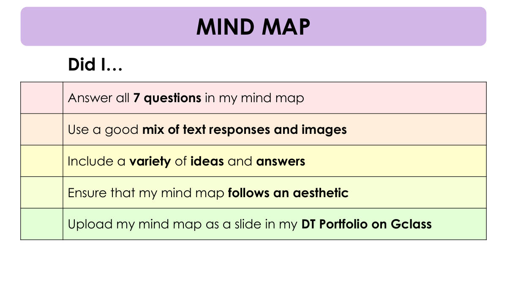
글과 이미지를 잘 섞어서 답했다
다양한 아이디어와 답을 담았다
내 마인드맵이 보기 좋은 형태(aesthetic)를 따르도록 했다
내 마인드맵을 Gclass의 DT 포트폴리오에 슬라이드로 올렸다
마인드맵
나는 …했는가?
마인드맵을 제출하기 전에 스스로 점검하는 체크리스트다
글만 쓰지 말고 이미지를 섞고, 7개 질문에 모두 답한 뒤 Gclass의 DT 포트폴리오에 슬라이드로 올려야 한다

명확한 디자인 과제(design brief)를 쓴다.
현실적인 목표 사용자를 정한다.
디자인에 영향을 주는 사용자 요구를 찾아낸다.
디자인 과제 & 고객 프로필 - AO1
상황(Situation)이란 무엇인가?
상황은 프로젝트의 배경 이야기다.
상황은 이런 것을 설명한다.
왜 이 디자인이 필요한지.
누가 사용할 수 있는지.
어떤 문제나 기회가 있는지.
디자인 과제(Design Brief)란 무엇인가?
디자인 과제는 간단한 의도 진술문이다.
디자인 과제는 이런 것을 설명한다.
무엇을 디자인할 것인지.
누구를 위해 디자인하는지.
제품의 목적이 무엇인지.
생각하고, 짝과 이야기하고, 나누기
다음이 상황과 디자인 과제의 좋은 예인가? 왜 그런가?
상황: "내 깡통을 멋져 보이게 하고 싶다."
디자인 과제: "나는 친구들을 위한 깡통을 디자인하겠다."
상황: "깡통은 재미있다."
디자인 과제: "나는 깡통의 브랜드를 바꾸고 안에 아무거나 넣겠다."
상황(Situation)은 배경 이야기로 왜 필요한지·누가 쓸지·어떤 문제나 기회가 있는지를 설명하고, 디자인 과제(Design Brief)는 무엇을·누구를 위해·어떤 목적으로 디자인하는지를 밝히는 짧은 의도 진술문이다.
이 쪽의 학습 목표는 명확한 디자인 과제를 쓰고, 현실적인 목표 사용자를 정하고, 디자인에 영향을 주는 사용자 요구를 찾아내는 것이다. 마지막 예시 네 개는 짝과 함께 좋은 예인지 따져 보는 활동이다.

● 명확한 디자인 브리프를 쓴다.
● 현실적인 목표 사용자를 정한다.
● 디자인에 영향을 주는 사용자 요구를 찾아낸다.
디자인 브리프와 고객 프로필 - AO1
과제 1: 조사하고 탐구하기
1. 디지털 포트폴리오에 왜 이 디자인이 필요한지를 설명하는 상황(배경 이야기)을 쓴다.
2. 무엇을 디자인할 것이며 누구를 위한 것인지 설명하는 디자인 브리프(사명문)를 쓴다.
도움이 되는 문장 시작 표현
1) 상황 시작 문장:
"사람들은 종종 ______ 때문에 어려움을 겪는다. 재활용 깡통을 ______로 다시 사용하면 ______에 도움이 될 수 있다."
2) 디자인 브리프 시작 문장:
"나는 재활용 깡통 안에 들어가는 ______을 디자인하고 만들 것이다. 그 깡통은 ______의 마음에 들도록 다시 브랜딩될 것이다."
상황(배경 이야기)은 '왜 이 디자인이 필요한가'를 쓰는 것이고, 디자인 브리프는 '무엇을 누구를 위해 만드는가'를 쓰는 것이다. 두 개는 역할이 다르다.
목표 사용자는 현실적으로 정해야 하고, 깡통은 그 사용자의 마음에 들도록 다시 브랜딩한다는 조건이 붙는다.

학습 목표
● 명확한 디자인 브리프를 쓴다.
● 현실적인 목표 사용자를 정한다.
● 디자인에 영향을 주는 사용자의 필요를 찾아낸다.
조사하기
1. 왜 내 디자인이 필요한지 설명하는 상황(배경 이야기)을 쓴다.
2. 무엇을 디자인할지, 누구를 위한 것인지 설명하는 디자인 브리프(사명문)를 쓴다.
도움이 되는 문장 시작
상황 시작 문장: "사람들은 종종 ______ 때문에 힘들어한다. 재활용 깡통을 ______로 다시 쓰면 ______에 도움이 될 수 있다."
디자인 브리프 시작 문장: "나는 재활용 깡통 안에 들어가는 ______를 디자인하고 만들 것이다. 그 깡통은 ______의 마음에 들도록 리브랜딩할 것이다."
스스로 점검
내 상황과 디자인 브리프가 아래를 만족하면 체크한다.
❏ 문제나 필요를 분명하게 설명한다
❏ 사용자나 고객을 정한다
❏ 깡통 안에 들어갈 제품이 무엇인지 말한다
❏ 깡통을 어떻게 리브랜딩할지 설명한다
❏ 현실적이고 학교와 집에서 만들 수 있다
상황(situation)은 '왜 필요한가'라는 배경 이야기이고, 디자인 브리프(design brief)는 '무엇을 누구를 위해 만드는가'라는 사명문이다. 둘은 역할이 다르므로 따로 써야 한다.
자기 점검 5개 항목이 곧 채점 기준이다 — 문제 설명, 사용자 지정, 깡통 속 제품, 리브랜딩 방법, 학교·집에서 만들 수 있는 현실성을 모두 담아야 한다.

주머니 크기 퍼즐 게임
상황: "십대들은 친구를 기다리거나 쉬는 시간에 시간을 보낼 빠르고 재미있는 활동을 자주 찾는다. 많은 게임은 들고 다니기에 너무 부피가 크다. 재활용 깡통을 다시 써서 작은 퍼즐이나 게임을 담을 수 있다."
디자인 브리프: "나는 재활용 깡통 안에 들어가는 미니 퍼즐 게임을 디자인하고 만들겠다. 리브랜딩은 그 깡통에 장난기 있고 대담한 스타일을 주어, 휴대용 오락을 즐기는 십대에게 어필할 것이다."
미니 공예 키트
상황: "팔찌 만들기나 종이접기 같은 창작 취미는 젊은 사람들에게 인기가 많지만, 제대로 보관하지 않으면 재료를 잃어버리거나 망가뜨리기 쉽다. 재활용 깡통이 휴대용 공예 키트가 되어 줄 수 있다."
디자인 브리프: "나는 재활용 깡통 안에 들어가는 공예 키트, 예를 들어 미니 우정 팔찌 세트를 디자인하고 만들겠다. 리브랜딩은 DIY 프로젝트를 즐기는 창의적인 십대를 겨냥할 것이다."
겨울 액세서리 깡통
상황: "장갑, 양말, 모자 같은 작은 옷가지는 자주 어디 뒀는지 잃어버린다. 깡통을 포장재로 다시 쓰면 물건을 한데 모아 두면서 다시 쓸 수 있는 보관 방법을 알릴 수 있다."
디자인 브리프: "나는 재활용 깡통 안에 넣을 손뜨개 양말 한 켤레를 디자인하고 만들겠다. 리브랜딩은 제품에 현대적이고 환경을 생각하는 느낌을 주어, 환경을 의식하는 십대를 끌어당길 것이다."
주머니 구급/케어 키트(의료용 아님, 제품 중심)
상황: "젊은 사람들은 밖에 나가 있을 때 반창고, 립밤, 물티슈 같은 작고 쓸모 있는 물건이 자주 필요하지만, 그것들은 가방 바닥에서 잃어버리기 쉽다. 재활용 깡통을 다시 써서 이 필수품들을 담을 수 있다."
디자인 브리프: "나는 재활용 깡통 안에 들어가는 작은 개인 케어 키트를 디자인하고 만들겠다. 여기에는 다시 쓸 수 있는 물티슈 같은 간단한 손수 만든 물건을 넣는다. 리브랜딩은 활동적인 십대를 위한 건강과 지속가능성을 강조할 것이다."
디자인 브리프 & 상황 도움 허브
네 가지 예시 모두 같은 짜임을 따른다 — 먼저 상황(누가, 어떤 문제를 겪는가)을 쓰고, 그다음 디자인 브리프(나는 무엇을 디자인하고 만들겠다 + 리브랜딩은 누구를 겨냥한다)를 쓴다.
맨 위에 그대로 베끼지 말라고 적혀 있다. 이 예시들은 아이디어를 얻기 위한 안내일 뿐이다.
디자인 브리프 문장은 모두 "I will design and make…"(나는 ~을 디자인하고 만들겠다)로 시작하고, 뒤에 리브랜딩이 어떤 느낌으로 어떤 십대를 겨냥하는지를 붙인다.

나는 ~을 했는가…
문제나 필요를 분명하게 설명했는가
사용자나 고객을 정했는가
깡통 안에 어떤 제품이 들어갈지 말했는가
깡통을 어떻게 리브랜딩할지 설명했는가
내 상황과 디자인 브리프가 현실적이고 학교와 집에서 만들 수 있는지 확인했는가
디자인 브리프에는 문제·사용자·들어갈 제품·리브랜딩 방법 네 가지가 들어가야 한다.
계획은 학교와 집에서 실제로 만들 수 있을 만큼 현실적이어야 한다.
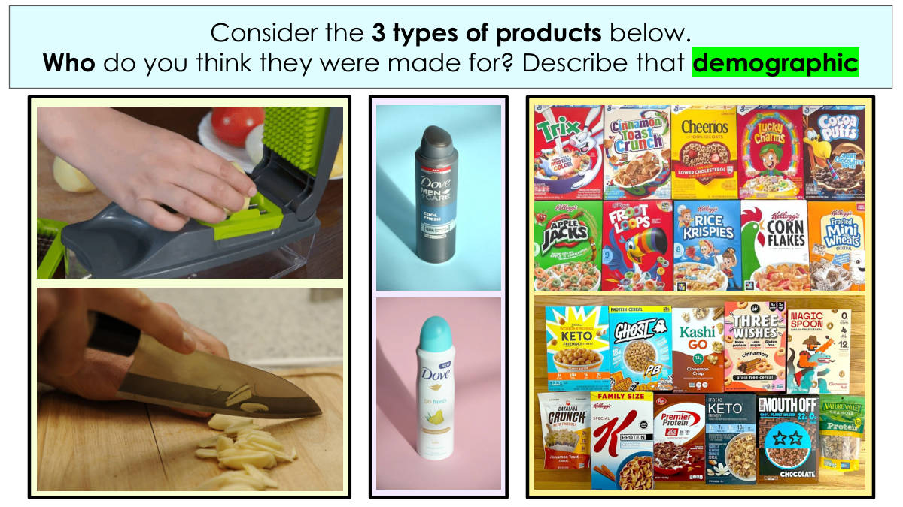
이것들이 누구를 위해 만들어졌다고 생각하는가?
그 수요층(demographic)을 설명한다.
제품을 보고 그것을 쓸 사람이 누구인지 생각해 보는 활동이다
demographic은 나이·성별·취향 등으로 나눈 '사용자 집단'을 뜻한다

명확한 디자인 브리프를 쓴다.
현실적인 목표 사용자를 정한다.
디자인에 영향을 주는 사용자의 필요를 찾아낸다.
디자인 브리프와 고객 프로필 - AO1
모든 제품은 특정한 누군가를 위해 디자인된다.
고객 프로필은 디자인하기 전에 고객의 필요를 이해하도록 도와준다.
고객이 무엇을 필요로 하고 원하는지 이해한다 → 더 잘 디자인된 제품
Demographic(인구통계학적)
나이, 성별, 사는 곳, 직업처럼 공통점으로 사람들을 무리 지어 설명하는 방법이다.
제품은 아무나가 아니라 특정한 사용자를 위해 만들며, 고객 프로필로 그 사람의 필요를 먼저 파악한 뒤 디자인한다.
Demographic(인구통계)은 나이·성별·거주지·직업 같은 공통점으로 사람들을 묶어 설명하는 방법이다.
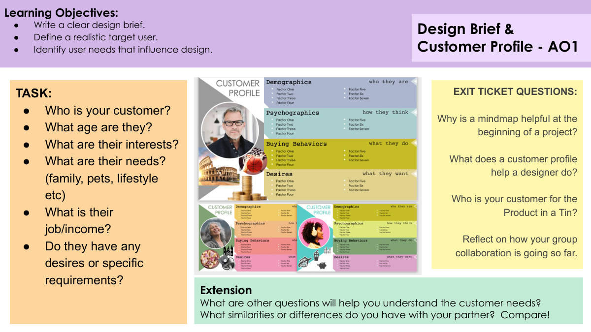
당신의 고객은 누구인가?
그들은 몇 살인가?
그들의 관심사는 무엇인가?
그들의 필요는 무엇인가? (가족, 반려동물, 생활방식 등)
그들의 직업/수입은 무엇인가?
그들에게 어떤 바람이나 특별한 요구사항이 있는가?
심화(Extension)
고객의 필요를 이해하는 데 도움이 될 다른 질문에는 무엇이 있는가?
짝과 나 사이에 어떤 공통점이나 차이점이 있는가? 비교해 보라!
나가기 질문(EXIT TICKET)
마인드맵이 프로젝트 시작 단계에서 도움이 되는 이유는 무엇인가?
고객 프로필은 디자이너가 무엇을 하도록 돕는가?
Product in a Tin의 고객은 누구인가?
지금까지 모둠 협업이 어떻게 되어가고 있는지 돌아보라.
학습 목표
명확한 디자인 브리프를 쓴다.
현실적인 목표 사용자를 정한다.
디자인에 영향을 주는 사용자 필요를 찾아낸다.
디자인 브리프 & 고객 프로필 - AO1
고객 프로필은 나이·관심사·필요·직업/수입·특별한 요구사항의 다섯 가지 항목으로 만든다.
이 쪽의 학습 목표는 디자인 브리프 쓰기, 현실적인 목표 사용자 정하기, 디자인에 영향을 주는 사용자 필요 찾아내기 세 가지다.
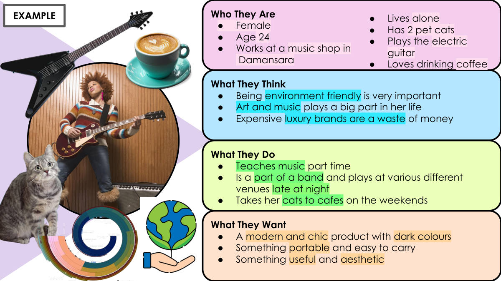
여성이다.
나이는 24세다.
다만사라(Damansara)의 음악 가게에서 일한다.
혼자 산다.
고양이 2마리를 기른다.
일렉트릭 기타를 친다.
커피 마시는 것을 아주 좋아한다.
이 사람은 무엇을 생각하는가
환경친화적인 것이 매우 중요하다고 생각한다.
미술과 음악이 그녀의 삶에서 큰 부분을 차지한다.
비싼 명품 브랜드는 돈 낭비라고 생각한다.
이 사람은 무엇을 하는가
시간제로 음악을 가르친다.
밴드에 속해 있고 밤늦게 여러 공연장에서 연주한다.
주말에는 고양이들을 카페에 데려간다.
이 사람은 무엇을 원하는가
어두운 색의 현대적이고 세련된 제품을 원한다.
휴대하기 쉽고 들고 다니기 편한 것을 원한다.
쓸모 있으면서 보기에도 아름다운 것을 원한다.
예시
사용자 프로필을 '누구인가 / 무엇을 생각하는가 / 무엇을 하는가 / 무엇을 원하는가' 네 칸으로 나눠 적는 것이 이 쪽의 형식이다.
'무엇을 원하는가'에 적힌 어두운 색·현대적이고 세련됨·휴대성·쓸모와 아름다움이 곧 제품을 만들 때 지켜야 할 조건이 된다.
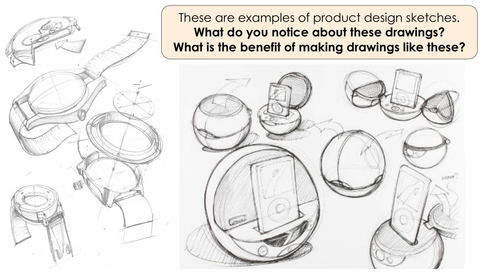
이 그림들에서 무엇이 눈에 띄는가?
이런 그림을 그리는 것의 이점은 무엇인가?
제품 디자인 스케치의 예시를 보고 특징을 살펴보는 쪽이다
스케치를 그리면 어떤 이점이 있는지 생각해 답해야 한다

학습 목표:
● 2점 투시로 그리고 알맞은 색을 넣을 수 있다.
● 2점 투시 기술을 써서 여러 가지 모양 디자인을 발전시킬 수 있다.
2점 투시
영어 / 중국어 / 한국어
Perspective — 透视 — 원근법
Horizon — 地平线 — 지평선
Vanishing Point — 消失点 — 소실점
Cuboid — 长方体 — 직육면체
Cylinder — 圆柱体 — 원기둥
원근법이란 무엇인가?
이 쪽의 학습 목표는 2점 투시로 그리고 알맞은 색을 넣는 것, 그리고 2점 투시 기술로 여러 모양 디자인을 발전시키는 것이다.
꼭 외울 낱말 다섯 개는 원근법(Perspective), 지평선(Horizon), 소실점(Vanishing Point), 직육면체(Cuboid), 원기둥(Cylinder)이다.
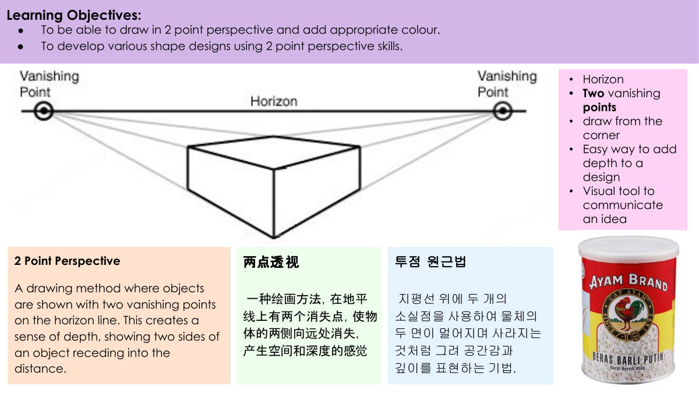
물체를 지평선 위의 소실점 두 개로 나타내는 그리기 방법이다.
이렇게 하면 깊이감이 생기고, 물체의 두 면이 멀어지며 사라지는 것처럼 보인다.
지평선
소실점 두 개
모서리에서부터 그린다
디자인에 깊이를 더하는 쉬운 방법이다
아이디어를 전달하는 시각적 도구다
학습 목표
2점 투시도법으로 그리고 알맞은 색을 칠할 수 있다.
2점 투시도법 기술을 써서 여러 가지 모양 디자인을 발전시킨다.
소실점 두 개를 지평선 위에 잡고, 물체의 모서리에서부터 선을 그어 두 면이 멀어지게 그린다.
2점 투시도법은 디자인에 깊이를 더하고 아이디어를 전달하는 시각적 도구다.
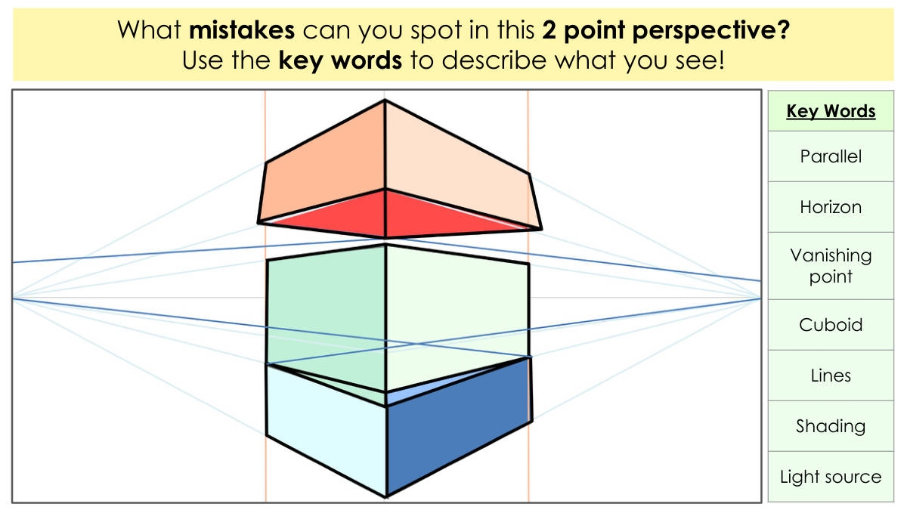
핵심 낱말을 써서 네가 본 것을 설명해라!
핵심 낱말
Parallel(평행)
Horizon(수평선)
Vanishing point(소실점)
Cuboid(직육면체)
Lines(선)
Shading(음영)
Light source(광원)
2점 투시로 그린 그림에서 잘못된 곳을 찾아내는 활동 쪽이다.
평행·수평선·소실점·직육면체·선·음영·광원 일곱 개 핵심 낱말을 써서 설명해야 한다.
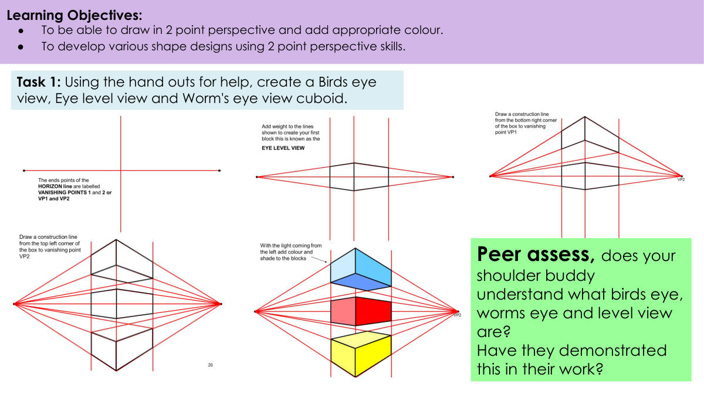
짝 평가를 한다. 옆자리 짝이 새의 눈 시점, 벌레의 눈 시점, 눈높이 시점이 무엇인지 이해하고 있는가?
짝이 자기 작품에서 그것을 실제로 보여 주었는가?
학습 목표:
● 2점 투시도로 그리고 알맞은 색을 넣을 수 있다.
● 2점 투시 기술을 써서 여러 가지 도형 디자인을 발전시킬 수 있다.
새의 눈 시점·눈높이 시점·벌레의 눈 시점 세 가지로 육면체를 하나씩 그린다.
짝과 서로의 작품을 평가하며 세 시점을 이해했는지, 작품에 나타냈는지 확인한다.
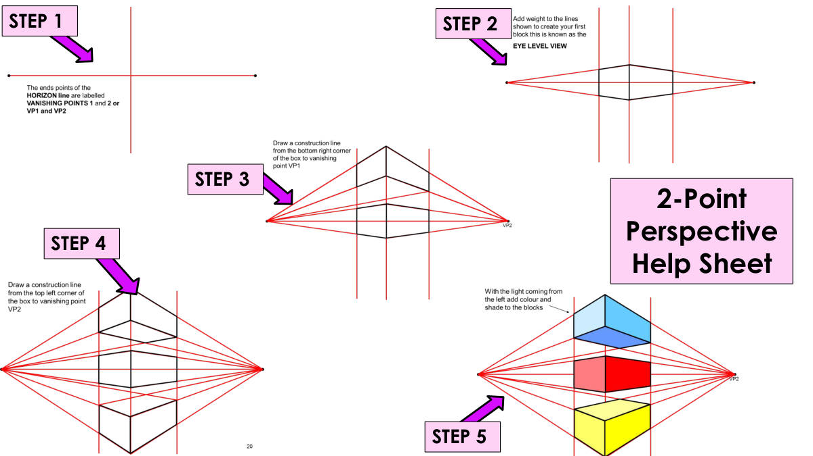
STEP 2
STEP 3
STEP 4
STEP 5
2점 투시 도움 자료
2점 투시를 5단계(STEP 1~5)로 나눠 익히는 도움 자료 쪽이다.
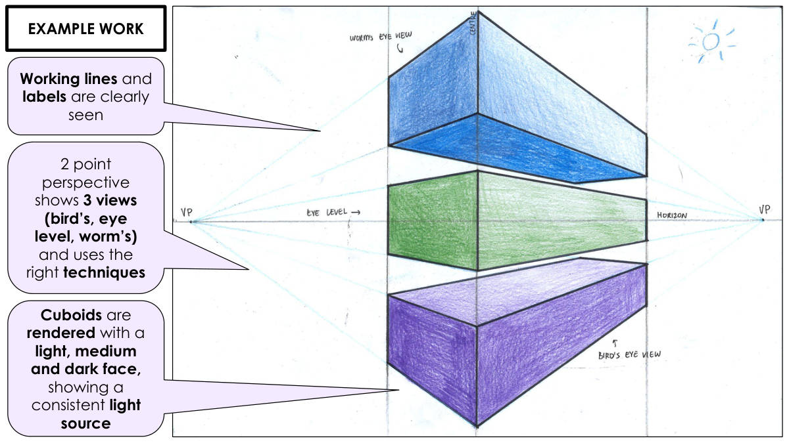
작업선과 이름표가 뚜렷하게 보인다
2점 투시로 세 가지 시점(새의 눈, 눈높이, 벌레의 눈)을 보여 주고 올바른 기법을 쓴다
직육면체는 밝은 면·중간 면·어두운 면으로 렌더링하여 일관된 광원을 보여 준다
작업선과 이름표를 지우지 말고 뚜렷하게 남겨야 한다
2점 투시로 새의 눈·눈높이·벌레의 눈 세 시점을 다 그려야 한다
직육면체마다 밝은 면·중간 면·어두운 면을 나눠 광원을 하나로 유지해야 한다
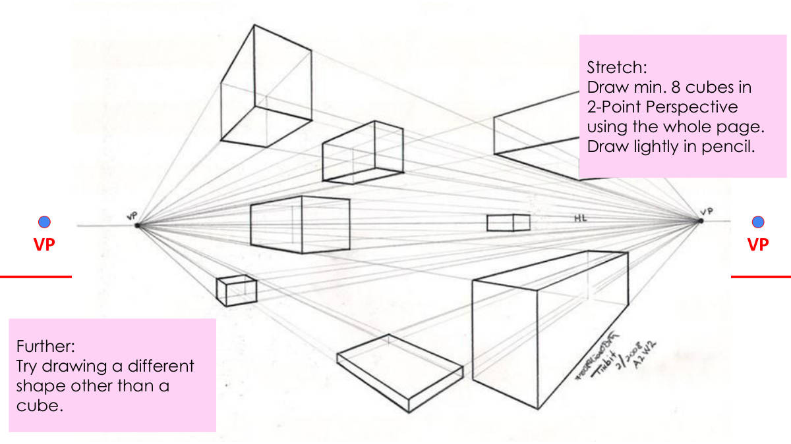
도전 과제:
2점 투시로 정육면체를 최소 8개 그린다.
종이 한 장을 다 쓴다.
연필로 연하게 그린다.
더 나아가기:
정육면체 말고 다른 모양도 그려 본다.
VP (소실점)
2점 투시는 양쪽 끝에 소실점(VP) 두 개를 두고, 모든 선을 그 두 점으로 모아 그리는 방법이다.
연필로 연하게 그려야 나중에 고치거나 지우기 쉽다.
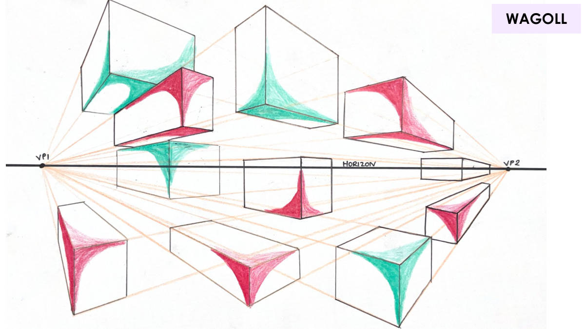
이 쪽에는 WAGOLL이라는 낱말만 적혀 있다
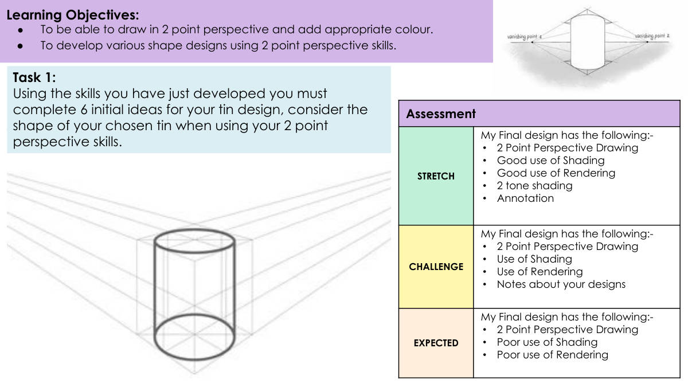
2점 투시로 그리고 알맞은 색을 넣을 수 있다.
2점 투시 기술을 써서 여러 가지 모양 디자인을 발전시킨다.
평가
STRETCH(최상) — 내 최종 디자인에는 다음이 있다: 2점 투시 그림 / 좋은 명암 사용 / 좋은 렌더링 사용 / 2단계 명암 / 주석
CHALLENGE(중간) — 내 최종 디자인에는 다음이 있다: 2점 투시 그림 / 명암 사용 / 렌더링 사용 / 디자인에 대한 메모
EXPECTED(기본) — 내 최종 디자인에는 다음이 있다: 2점 투시 그림 / 부족한 명암 사용 / 부족한 렌더링 사용
과제 1
방금 익힌 기술을 써서 깡통 디자인의 초기 아이디어 6개를 완성해야 한다. 2점 투시 기술을 쓸 때 내가 고른 깡통의 모양을 고려한다.
2점 투시로 깡통 디자인 초기 아이디어 6개를 그리는 것이 이 쪽의 과제다.
등급은 세 단계다 — 기본은 2점 투시 그림만, 중간은 명암·렌더링·메모까지, 최상은 2단계 명암과 주석까지 넣어야 한다.
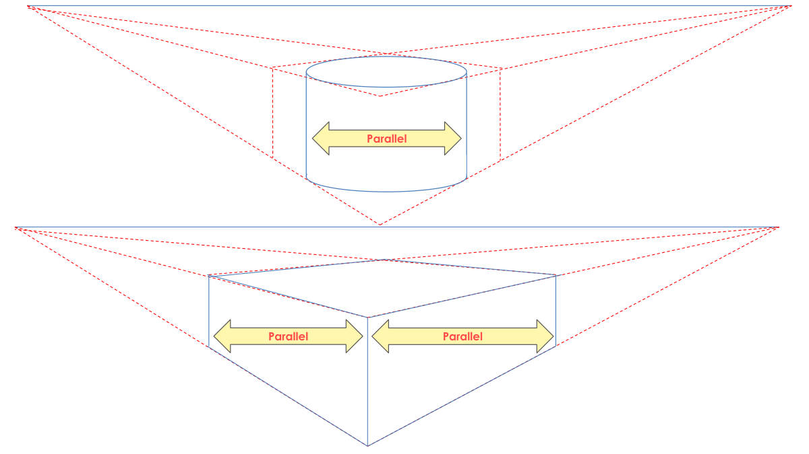
Parallel(평행)
Parallel(평행)
Parallel은 '평행'이라는 뜻이다. 이 쪽에는 같은 낱말이 세 번 적혀 있다.